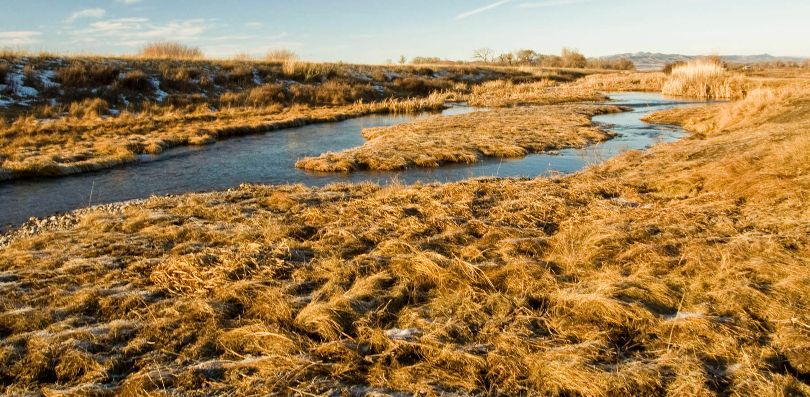

According to the U.S. EPA over 55% of U.S. waterways are in poor health. They provide insufficient habitat for wildlife, fail to adequately cleanse water, and magnify the impacts of floods due to human alterations. We restore creeks and streams to improve and provide greater habitat for fish and other wildlife species. Our restoration efforts result in lower water temperature, cleaner water, slower moving water (minimizing the impacts of floods), and recharge the aquifer. We have restored roughly 50 miles of creeks and rivers to date.
Creek Restoration
Before

